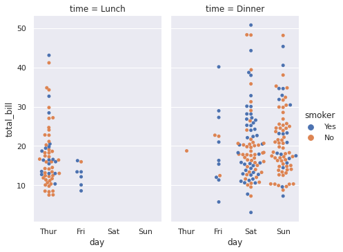

Introduction to Seaborn
Seaborn builds on top of Matplotlib, and it is mostly deployed with pandas.
import seaborn as sns
sns.__version__
'0.11.0'
sns.set()
sns.set_style('darkgrid')
sns.set_color_codes()
current_palette = sns.color_palette()
sns.palplot(current_palette)
Load the tips dataset, which included in Seaborn.
tips = sns.load_dataset("tips")
tips.head(10)
| total_bill | tip | sex | smoker | day | time | size | |
|---|---|---|---|---|---|---|---|
| 0 | 16.99 | 1.01 | Female | No | Sun | Dinner | 2 |
| 1 | 10.34 | 1.66 | Male | No | Sun | Dinner | 3 |
| 2 | 21.01 | 3.50 | Male | No | Sun | Dinner | 3 |
| 3 | 23.68 | 3.31 | Male | No | Sun | Dinner | 2 |
| 4 | 24.59 | 3.61 | Female | No | Sun | Dinner | 4 |
| 5 | 25.29 | 4.71 | Male | No | Sun | Dinner | 4 |
| 6 | 8.77 | 2.00 | Male | No | Sun | Dinner | 2 |
| 7 | 26.88 | 3.12 | Male | No | Sun | Dinner | 4 |
| 8 | 15.04 | 1.96 | Male | No | Sun | Dinner | 2 |
| 9 | 14.78 | 3.23 | Male | No | Sun | Dinner | 2 |
Let’s visualize the data using relplot.
sns.relplot(
data=tips,
x="total_bill", y="tip",
hue="smoker", style="smoker"
)
<seaborn.axisgrid.FacetGrid at 0x7fce7dbef470>
sns.relplot(
data=tips,
x="total_bill", y="tip", col="time",
hue="smoker", style="smoker", size="size",
)
<seaborn.axisgrid.FacetGrid at 0x7fce7dbdc588>

dots = sns.load_dataset("dots")
sns.relplot(
data=dots, kind="line",
x="time", y="firing_rate", col="align",
hue="choice", size="coherence", style="choice",
facet_kws=dict(sharex=False),
)
<seaborn.axisgrid.FacetGrid at 0x7fce79fb2358>
Let’s visualize the dataset using catplot.
sns.catplot(x='day', y='total_bill', hue='smoker',
col='time', aspect=.6,
kind='swarm', data=tips)
<seaborn.axisgrid.FacetGrid at 0x7fce79ec3a20>

We can play with the Titanic dataset, which is already included in Seaborn.
titanic = sns.load_dataset('titanic')
t = sns.catplot(x='fare', y='survived', row='class',
kind='box', orient='h', height=1.5, aspect=4,
data=titanic.query('fare > 0'))
t.set(xscale='log');
Let’s visualize the Iris data using pairplot. The Iris dataset is already included in Seaborn.
iris = sns.load_dataset('iris')
sns.pairplot(iris, hue = 'species')
<seaborn.axisgrid.PairGrid at 0x7fce7dbc4d30>
Maybe we can change the color?
# Reference for color: https://seaborn.pydata.org/tutorial/color_palettes.html
sns.pairplot(iris, hue = 'species', palette='dark')
<seaborn.axisgrid.PairGrid at 0x7fce77d04748>

sns.pairplot(iris, kind='kde')
<seaborn.axisgrid.PairGrid at 0x7fce7777d390>

sns.pairplot(iris, kind='hist')
<seaborn.axisgrid.PairGrid at 0x7fce88e085c0>
Let’s visualize the flights dataset using heatmap. We will also use matplotlib.
from matplotlib import pyplot as plt
flights = sns.load_dataset('flights')
flights = flights.pivot('month', 'year', 'passengers')
plt.figure(figsize=(15, 15))
ax = sns.heatmap(flights, annot=True, fmt='d')
References